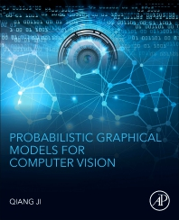

|
|
Qiang Ji
Professor |

 About Me
About Me
Qiang Ji received his Ph.D. degree in Electrical Engineering from the University of Washington. He is a Professor in the Department of Electrical, Computer, and Systems Engineering at Rensselaer Polytechnic Institute (RPI) and Director of the Intelligent Systems Laboratory (ISL).
His longstanding research spans two closely connected areas: human-centered computer vision, particularly nonverbal human behavior analysis, and probabilistic graphical models for representing uncertainty, structure, and dependencies in complex problems. Building on this foundation, his recent research focuses on probabilistic machine learning, including Bayesian deep learning, causal representation learning, and knowledge-augmented deep learning, with applications to human-centered and embodied AI.
From January 2009 to August 2010, he served as a Program Director at the National Science Foundation (NSF), managing NSF's machine learning and computer vision programs. Prior to joining RPI in 2001, he was an Assistant Professor in the Department of Computer Science at the University of Nevada, Reno. He also held research and visiting positions at the Beckman Institute at the University of Illinois at Urbana-Champaign, the Robotics Institute at Carnegie Mellon University, and the U.S. Air Force Research Laboratory.
Dr. Ji currently serves as the director of the Intelligent Systems Laboratory (ISL).
Prof. Ji is a fellow of the IEEE and the IAPR.
 Research Interests
Research Interests
Human-Centered Computer Vision; Probabilistic Graphical Models; Probabilistic Machine Learning, including Bayesian Deep Learning, Causal Representation Learning, and Knowledge-Augmented Deep Learning; Human-Centered and Embodied AI. For details on current research projects, click here
Book: Probabilistic Graphical Models for Computer Vision

 Teaching
Teaching
ECSE 4850/6850
Introduction to Deep Learning
ECSE 6965: Advanced Topics in Probabilistic Deep Learning
ECSE 4961/6650 Computer Vision
ECSE 4810/6810 Introduction to Probabilistic Graphical Models
Research Projects
Human Centered Computer Vision
Probabilistic Machine Learning
Scene Graph Generation and Applications